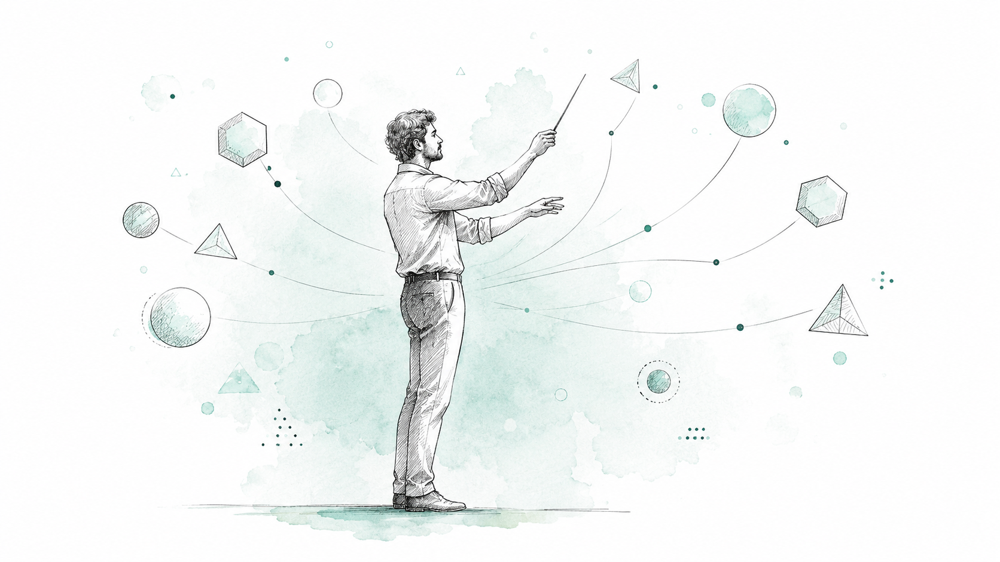
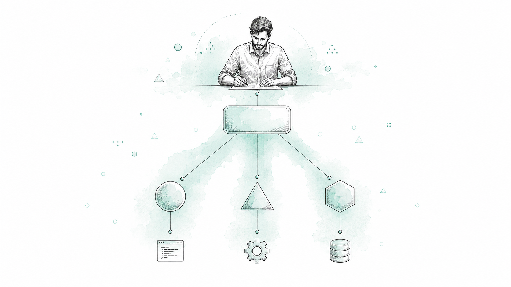
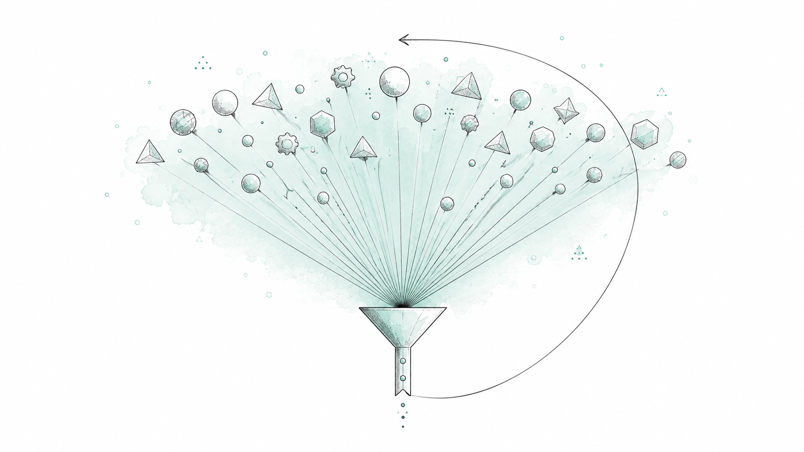
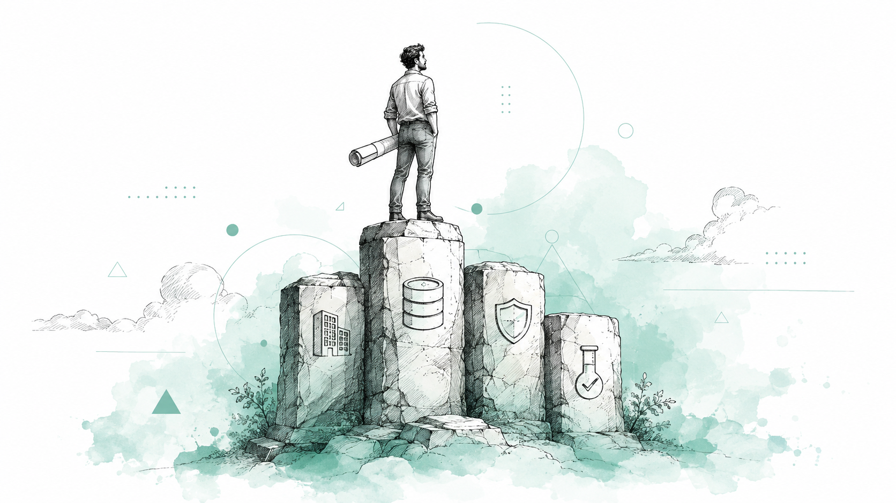
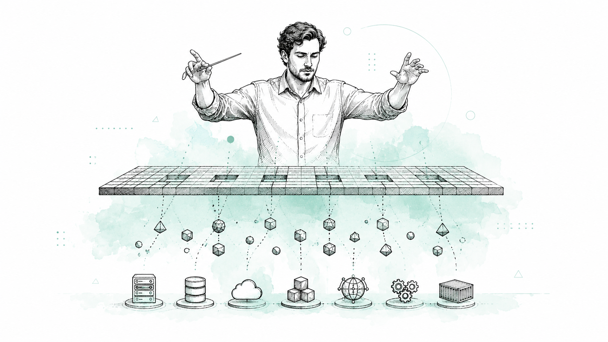
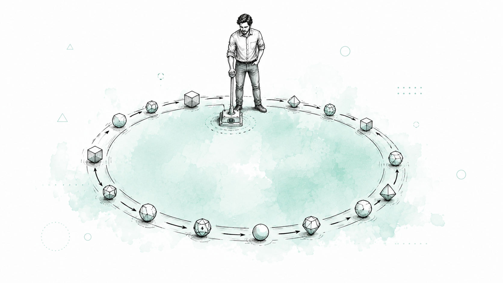

The changing economics of software engineering.

Building a professional SaaS product used to require a full team, in sequence.
The engineer can now delegate far more than a single function.

AI agents introduce the possibility of much greater parallelization — but that creates a new constraint.

Effective orchestration comes from understanding software, not from knowing how to open a chat window.

Designer + Architect + Orchestrator + Reviewer + Decision Maker.

The competitive advantage may come from the best engineering system, not the largest team.
The more autonomous the system becomes, the more important governance becomes.
